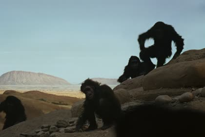
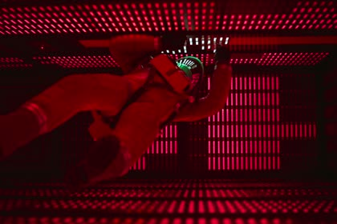

There's a fun trend going around the internet where actors try to guess one of their own movies from a barcode-like image. Each line in the image is the color of a single frame. For example, in the image of 2001: A Space Odyssey below, there's a very distinctive block of deep red near the end, which is Dave shutting down HAL, followed by the bright colors of the Star Gate. I was curious how well vision language models can guess which movie an image comes from, so I built a benchmark around it.

The Dawn of Man
Shutting down HALExample video of actors doing the same task
Try it yourself
Benchmark construction
I took the 100 most viewed YouTube videos and 100 popular movies that I could easily download without torrenting. For each video, I grabbed a frame every second and averaged it down to a single color. A benchmark pet peeve of mine is when the multiple choice answers are too easy and you can trivially infer the correct answer by process of elimination. So I gave each question 10 possible choices to really challenge the models.
I ran each model through its API on medium reasoning, without any web search tools, and asked them to give their best answer. I was also curious about whether agentic harnesses could improve their accuracy, so I did a separate run where the model was allowed to use tools and search the internet to answer each question.
Example
Results
The baseline random guess accuracy for each question is 10%. Opus 5.5, GPT-6.1 Sol and GPT-6 Astra all got around 25% of the problems right, while the open source models Qwen-3.5-397B, GLM-5.3-Flash and Qwen-3.8-27B all got around 18% accuracy. Here's the full list of input questions and the model responses.

*only 126/200 evaluated because I ran out of money mid run 😃
Adding Agent Harness
Oddly enough, Opus 5.5 with the Claude Code harness was lazy and never ran a single web search. It looked at the image and guessed, so it scored about the same as the plain API call.
GPT-6.1 Sol with the Codex harness searched the web on nearly every question. It looked up written descriptions of each candidate, with queries like "Bad Romance music video scenes white red ending" that mostly landed on Wikipedia, Reddit and IMDb. For films it also searched for existing movie barcodes. This only helped a little because it was matching colors against words. It never looked at a single frame of the candidates.
GLM-5.3 Flash with the opencode harness went further. By pulling YouTube's preview thumbnails for each candidate and compared their colors to the barcode, it was able to get the highest accuracy by far.
I also tried giving each agent access to the downloaded videos, but that turned out to be too easy and the models were able to hit 100% accuracy.
Summary
This is a pretty hard benchmark where I would bet that only true film buffs or terminally online Youtubers could get close to 100% accuracy. Given how niche these questions are, I really really doubt the models are explicitly trained on this task. It's interesting to see that even on a task this niche, American frontier models still beat out the best Chinese open-source models.
A link to the GitHub repo and the full dataset on Hugging Face can be found below.
Citation
Bolton, Logan. “VideoColorBench: Can VLMs Recognize Famous Videos From Just Their Colors?”. (Oct 2026). https://loganbolton.github.io/blog/videocolorbench/
Or use the BibTeX citation:
@article{bolton2026videocolorbench,
title = {VideoColorBench: Can VLMs Recognize Famous Videos From Just Their Colors?},
author = {Bolton, Logan},
journal = {loganbolton.github.io},
year = {2026},
month = {October},
url = {https://loganbolton.github.io/blog/videocolorbench/}
}